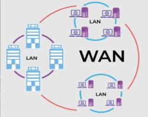

WAN
Una Red de Área Amplia (WAN) es un sistema de interconexión de computadoras y otros dispositivos electrónicos que abarca un área geográfica extensa, como un país, un continente o incluso el mundo entero. Su principal objetivo es permitir la comunicación y el intercambio de información entre redes más pequeñas, como redes de área local (LAN) y redes de área metropolitana (MAN).
